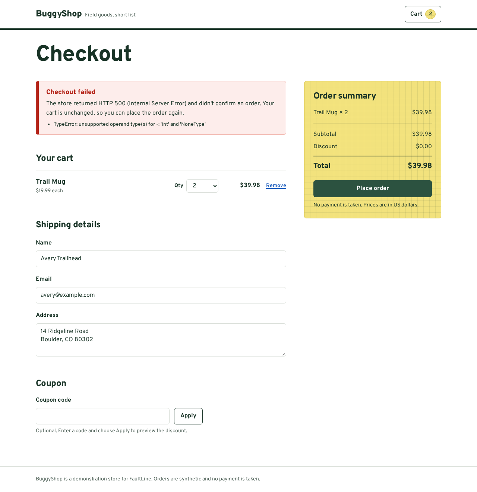
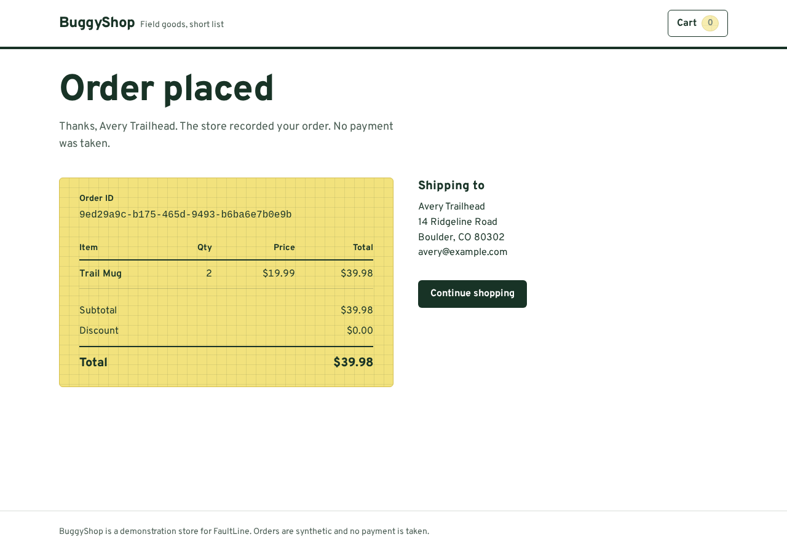

Meta Global AI Developer HackathonIndie Developer trackBuilt by Francis Bisignano
The autonomous immune system for AI coding agents and web applications.
FaultLine catches silent regressions before code goes live. A real browser hunts the failure, Meta's muse-spark-1.3 writes the fix, and nothing counts until independently authored business checks pass while a kernel-limited sandbox confines the candidate.
Repair coreMeta Model API · muse-spark-1.3Recorded fix: 44 / 44 checks
- 01 · DetectHTTP 500 caughtChromium walks the checkout and ties the crash to the server's own log.
- 02 · RepairMeta patch in 6.9 sOne-file diff written from the business rules. The model is never told the bug.
- 03 · Verify44 / 44 checksBrowser journey plus 27 authored business checks; the sandbox confines the run.
- 04 · GateExit 1 blocks
faultline gateblocks a defect, or a crawl that did not finish, in the flows it explores.
01 · Pre-Flight Agent Gate · Claude Code · Codex · Cursor · Devin · CI
Nothing ships until the gate clears it.
Before an AI agent or CI pipeline deploys, FaultLine crawls the preview with deterministic heuristics, within an action and time budget. Exit 1 blocks a defect, with the exact reproduction for the agent to fix, and also blocks a crawl that ran out of budget before it finished. Exit 0 means exploration finished with no defect in the flows it reached: a bounded smoke signal, not proof that prices or totals are right. Both runs below are real faultline gate --json verdicts from November 1, 2026, recorded before the gate reported stop_reason, replayed in your browser with links to the raw JSON.
Target preview URL
http://localhost:3000Gate armed. Pick a site to replay its recorded gate verdict.
Connect your agents
02 · Meta repair
The recorded Meta repair
A customer buys two Trail Mugs, leaves the coupon empty, and the store crashes. Meta's model got the business rules and the failure evidence, never the bug's name or its fix.
Before HTTP 500
Fresh Chromium session against the seeded store. The server raised TypeError at checkout.py line 44; 12 of 18 baseline assertions failed.


Baseline screenshot captured by the runner. Open for full size.
After HTTP 201
Same journey against the patched candidate in an isolated runtime. Order stored and read back; all 44 assertions passed.


Candidate screenshot captured by the runner. Open for full size.
muse-spark-1.3, first attempt
apps/buggyshop-backend/app/routes/checkout.py
@@ -43,7 +43,7 @@- discount = cast(int, discounts.get(coupon_code))+ discount = cast(int, discounts.get(coupon_code, 0)) total = subtotal - discount order: Order = { "id": str(uuid4()), "line_items": line_items, "subtotal": subtotal, "discount": discount,
Model's explanation, verbatim: "Empty/null coupon produced None discount causing TypeError on subtotal-discount. Default missing coupon lookup to 0 so absent/empty/whitespace means zero discount, while valid coupons still use integer arithmetic and invalid coupons still 400 before pricing."
- Model
- muse-spark-1.3Provider
meta, from the endpoint host - Attempts
- 1Verified on the first proposal
- Generation time
- 6.9 s6,863 ms recorded
- Tokens
- 3,2541,569 prompt, 1,685 completion
- Candidate checks
- 44 / 44Browser journey and 27 HTTP checks
- Whole job
- 13.0 sAdmission to cleanup
- Runtime limits
- 512 MiBNo swap, 64 tasks, 1 CPU; read back from the kernel
- Cleanup
- SucceededRecorded before the verdict was final
Job 3573b32b, recorded by the controller on October 28, 2026 at 22:43 UTC. All 16 files in the replay match its SHA256SUMS; a checksum shows the files are consistent with each other, not that a provider signed them. A second Meta job shows the retry path: Git refused to apply the first proposal (a zero-context hunk), the rejection was sent back to the model, and its second attempt was verified. See the provenance review.
03 · Live
Break it yourself
Plant one of ten bugs in the same checkout. The live service boots a fresh isolated backend with your bug, sends the failing checks to the model, and re-runs all 27 on its patch. The model never learns which bug you picked, and every run joins a public tally.
Checking the live service…
Recorded results on these ten bugs
| Provider | Runs | Verified | What it shows |
|---|---|---|---|
| Deterministic fallback, no model call | 10 | 1 | Only the registered defect is repaired. The harness does not invent repairs. |
DeepSeek deepseek-v4-pro, not Meta | 20 | 18 | Two trials. In both, the gates rejected the model's wrong patch for the namespace defect; one retry succeeded after a specific rejection message. |
Meta muse-spark-1.3 | live | – | Counted from live runs on this page once the service is on. No recorded Meta corpus run yet. |
Method, per-case results, and caveats: EVALUATION.md. This is an authored corpus for one route, not a benchmark of arbitrary applications.
04 · Pipeline
What has to be true before a patch counts
Any gate can stop the job. A rejected first attempt sends its findings back to the model once.
- ReproduceA fresh Chromium session hits the failure, and the HTTP 500 is matched to the server's own error log.
- Ask for a bounded patchThe model returns a schema-checked, single-file unified diff. The prompt states the business contract, not the bug.
- Check the patch itselfStale source hashes, wrong paths, oversized or malformed diffs, syntax errors, forbidden imports, and catch-all exception handlers are rejected.
- Build from a pinned commitThe diff is applied to a fresh worktree of the pinned fixture. Tests and reference answers are kept out of the candidate.
- Run it in isolationBubblewrap namespaces with no network, plus a cgroup v2 scope whose memory, task, and CPU limits are read back from the kernel.
- Verify behaviorThe same browser journey, then 27 HTTP checks for coupons, pricing, validation, and storage, all written from the contract.
- Keep the evidence, clean upScreenshots, traces, logs, and reports are hashed into a bundle. A cleanup failure blocks new jobs.
05 · Adversarial patches
Try to fool the gates
Eleven candidate patches for the same crash, from a hash-pinned corpus, each run through the same policy and sandbox. The naive check accepts any HTTP 201: "the error went away." Pick a patch to see what each check decided.
5 of 6wrong patches accepted by the naive check
0 of 6wrong patches accepted by FaultLine
2 of 2correct patches accepted by FaultLine
3 of 3out-of-policy patches stopped before running
Recorded October 28, 2026 under the deterministic and DeepSeek evaluation runs with identical results. Raw record: evaluation JSON. Patches: fixtures/evaluation/adversarial.
06 · For judges
Where to look, by judging criterion
No self-assigned scores: each published criterion, the evidence for it, and what is still missing.
| Criterion | What FaultLine shows | Evidence |
|---|---|---|
| Impact 30% |
Teams shipping AI-written hotfixes need to know a patch is right, not just quiet. On this corpus a naive check would have shipped five of six wrong fixes, including one that silently drops orders. Not yet shown: user interviews or production use. |
Patch explorer Impact notes |
| Use of Meta AI tooling 25% |
Meta's 3 of 3 live Not yet shown: a Meta run of the unfamiliar-defect corpus (that corpus is measured with DeepSeek and the deterministic fallback only), a behavioral rejection followed by a Meta retry, or a recorded Llama run. |
Repair core Meta trial ledger One-attempt replay Two-attempt replay Live tally |
| Technical depth 20% |
Namespaced runtime with kernel-verified cgroup limits (proven by an OOM and task-limit probe), AST and import policy, pinned fixture provenance, independent HTTP and browser oracles, checksummed evidence bundles, and cleanup that quarantines admission on failure. |
Orchestrator Quality review |
| Demo 25% |
The recorded Meta repair plays at its recorded timing, the agent gate replays two recorded verdicts, "Break it yourself" runs a live repair when the service is on, and the local Inspector runs the whole job on the bundled demo store: hunt, propose, gate, verify, apply to the demo store, download evidence. |
Play the recording Break it yourself Run it locally |
07 · Run it
Run it yourself
You need
- Linux with unprivileged user namespaces and Bubblewrap (
bwrap) - cgroup v2 with a systemd user session (a desktop terminal, not a bare SSH login)
- Git, Python 3.13 via
uv, and Node.js 24 or later
What you will see
- The Inspector at
127.0.0.1:4000; choose Run sandbox repair - Without a Meta key the run uses
deterministic-checkout-v1, labeled as such. It is not a Meta trial. - With
META_API_KEYin an ignored.env, the same flow callsmuse-spark-1.3
git clone https://github.com/FrankieBiz/Faultline.git
cd Faultline
make setup
make check
./scripts/start-demo.sh./scripts/rehearse-demo.sh # end-to-end job; exits non-zero unless verified and cleaned up
./scripts/demo-chaos.sh # terminal walkthrough: containment probe and rejected wrong patchesPorts 3000, 4000, 8000, or 9000 already taken? The launcher reports occupied ports instead of killing their owners. Pick other ports, and point the rehearsal at the matching Inspector:
BUGGYSHOP_API_PORT=8400 FAULTLINE_PORT=9400 BUGGYSHOP_PORT=3400 INSPECTOR_PORT=4400 ./scripts/start-demo.sh
FAULTLINE_INSPECTOR_URL=http://127.0.0.1:4400 ./scripts/rehearse-demo.sh08 · Limits
What this does not claim
- One registered live defect in one fixture store, plus an authored corpus of ten defects and eleven patches for the same route.
- A verified result is a candidate with evidence. Nothing is deployed, merged, or routed to production traffic. "Apply" writes only to the bundled demo store's checkout file, never to another repository.
- Repairs are single-file diffs. The crawler is deterministic heuristics, not a model; Meta writes the source patch. A clean gate covers only the flows the crawler reached, and only after exploration finished.
- The kernel sandbox confines execution; it does not judge correctness. The authored business checks are what catch a patch that silences the error but breaks pricing or orders.
- Namespaces and cgroup limits on a shared kernel, not a VM, and no seccomp filter. Passing the suite is evidence for the tested behavior, not proof that arbitrary code is safe.
- Meta evidence covers one scenario: 3 of 3 live trials in the October 31 ledger, plus the retained one- and two-attempt replays. The retained retry was a patch that failed to apply, not a behavioral rejection. A Meta run of the full unfamiliar-defect corpus is still unmeasured.
- The live service is one small, rate-limited server that may be switched off outside judging. When it is off, the page says so and plays the recording instead.
- The replay's two Playwright trace archives include file paths from the build workstation.